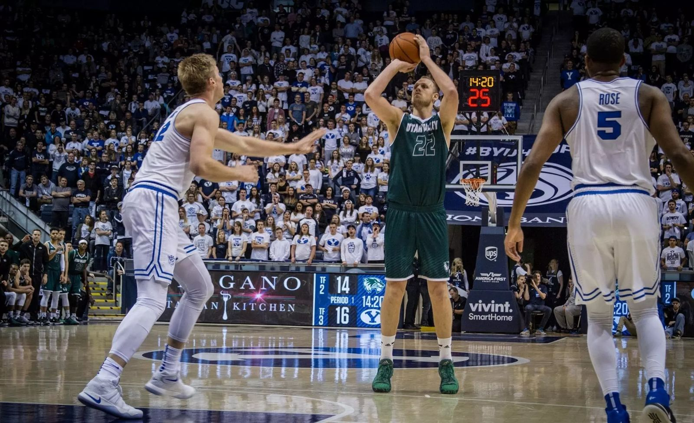
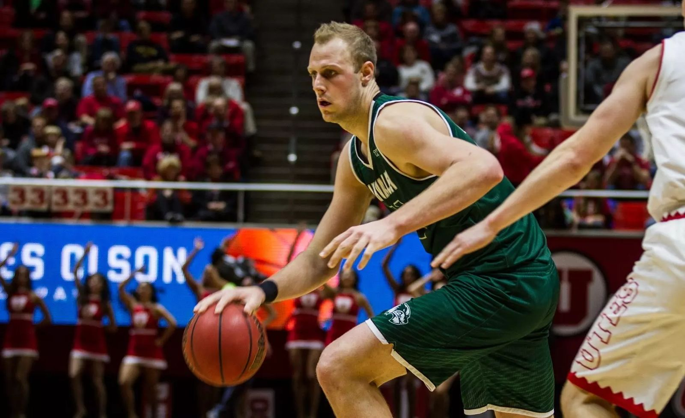
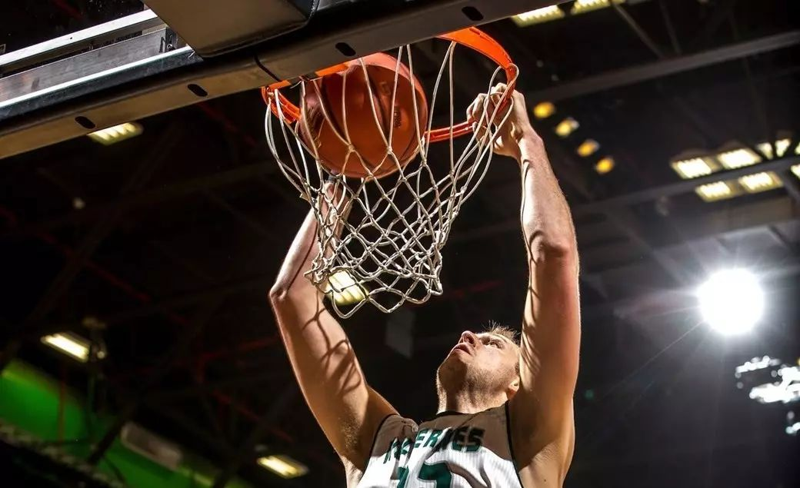

Meet Coach Isaac
A Division I post player who learned the game one detail at a time, and now teaches it the same way.

- Height
- 6'11"
- Wingspan
- 7'3"
- Rebounds, 2016–17
- 9.2 a game
- Field goal %
- 57.1%
- Blocks, 2016–17
- 54, 2nd in the WAC
- Training players
- 7+ years
- All-WAC Defensive Team, 2016–17
- Academic All-WAC and NABC Honors Court, 2016–17
- WAC Player of the Week, November 2016
- MaxPreps All-State Second Team, Mission Viejo High School
The player
Isaac grew up in Mission Viejo, California. As a senior at Mission Viejo High School he averaged 15.3 points, 11.3 rebounds and 5 blocks a game for a team that finished 29–3, and was named to the MaxPreps All-State Second Team.
He signed with BYU, where he played 34 games as a freshman in 2014–15. He then transferred to Utah Valley University. In 2016–17 he started 28 games, led the Wolverines in rebounds and blocks, and was named to the All-WAC Defensive Team. That November he scored 26 points on 10-of-12 shooting as Utah Valley beat BYU 114–101, the school's first-ever win at the Marriott Center. His senior season included games against Kentucky and Duke.

The coach
For more than seven years, Isaac has trained youth and high school players. Simplified Hoops brings that work to Dallas families at YMCAs, recreation centers, parks and home courts.
Big men are often told to "be physical" and "get position" without being shown how. Isaac learned the details the hard way, against bigger and faster players: where to put your feet, how to use your hips, when to front and when to play behind. He teaches those details to every player, guards included, in plain language.

The approach
The name says it. Every skill, on offense and defense, gets broken down movement by movement. The fundamental comes first, and each new step is added only once the one before it is solid. Every piece comes with a reason. When players understand why a drop step starts with a seal, or why a shot starts with the feet, they can fix their own mistakes in a game, without a coach in their ear.
Parents tell him the same thing: their kids finally understand why the fundamentals matter, and they see the confidence show up quickly.